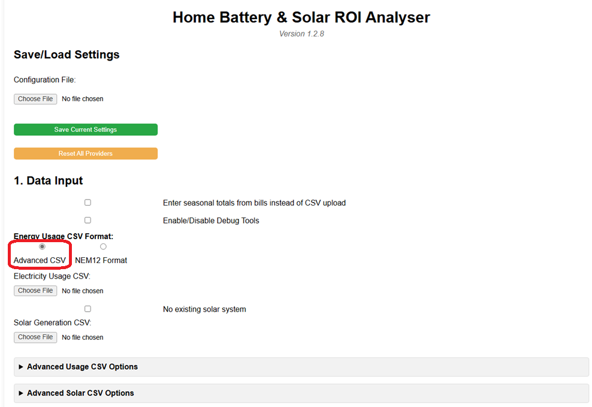
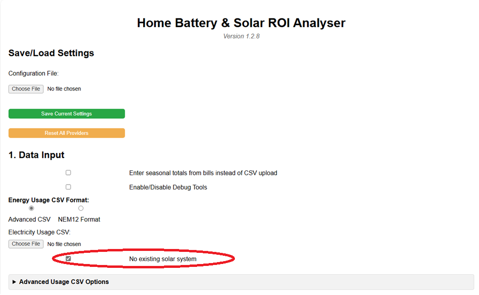
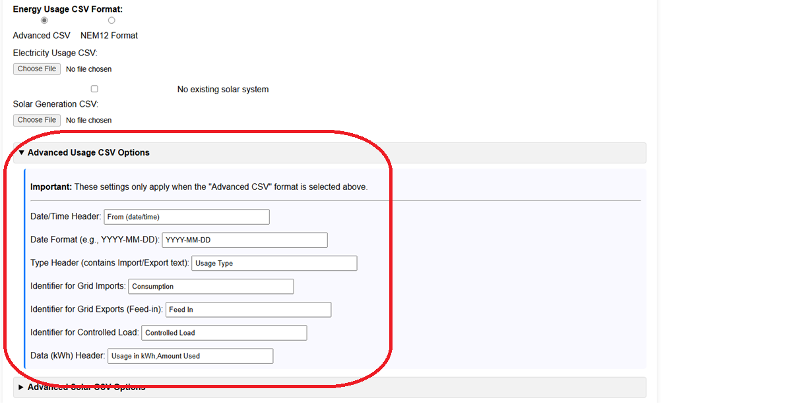
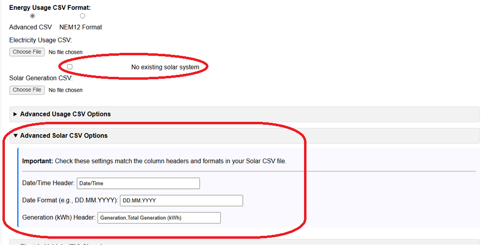
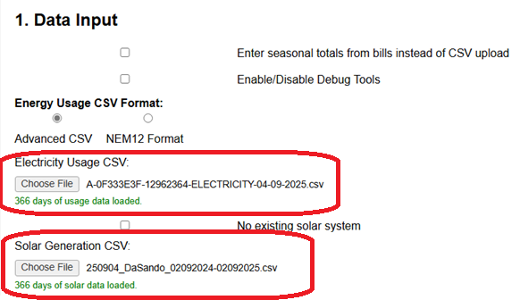

This guide explains how to import your energy usage and solar generation data using the "Advanced CSV" option. This method is flexible and allows you to use files downloaded from your energy retailer's website or other monitoring systems, even if they don't follow the NEM12 standard.
Step 1: Select Advanced CSV Mode
In Section 1: Data Input, ensure the radio button labelled "Advanced CSV" is selected. This is usually the default.

Selecting this mode ensures the "Advanced Usage CSV Options" and "Advanced Solar CSV Options" sections (detailed below) are visible and active.
Step 2: Understand the Required Files
The Advanced CSV mode typically requires two separate CSV files:
Electricity Usage CSV: This file should contain your interval data for energy imported from the grid (consumption) and energy exported to the grid (solar feed-in). It often comes from your electricity retailer.
Solar Generation CSV: This file should contain your interval data for the total energy generated by your solar panels. It often comes from your solar inverter monitoring system (e.g., Fronius Solar.web, Enphase Enlighten) or sometimes from your retailer alongside the usage data.
No Existing Solar? If you do not currently have a solar system, check the "No existing solar system" box. This will hide the need for a Solar Generation CSV file.

Step 3: Configure Advanced Usage CSV Options
This crucial step tells the analyser how to read your specific Electricity Usage CSV file. Expand the "Advanced Usage CSV Options" section.

You need to match the input fields to the column headers and formats in your usage CSV file:
Date/Time Header: Enter the exact column header name from your CSV that contains the date and time for each interval (e.g., "Interval Start", "Timestamp", "From (date/time)").
Date Format: Specify the format of the date part only (e.g., YYYY-MM-DD, DD/MM/YYYY, MM-DD-YYYY). The analyser handles common time formats automatically.
Type Header: Enter the column header name that distinguishes between grid imports and exports (e.g., "Usage Type", "Direction", "Flow").
Identifier for Grid Imports: Enter the exact text found in the 'Type Header' column that signifies energy imported from the grid (e.g., "Consumption", "Import", "General Usage").
Identifier for Grid Exports (Feed-in): Enter the exact text that signifies energy exported to the grid (e.g., "Feed In", "Export", "Generation").
Identifier for Controlled Load: (Optional) If your file includes a separate controlled load, enter the text identifier for it (e.g., "Controlled Load", "CL"). Leave blank if not applicable.
Data (kWh) Header: Enter the column header name for the actual energy value (in kWh). You can enter multiple possible names separated by commas if your retailer sometimes changes the header (e.g., "Usage in kWh,Amount Used,Energy").
Finding Headers: Open your CSV file in a spreadsheet program (like Excel, Google Sheets) or a text editor to see the exact header names and data formats.
Step 4: Configure Advanced Solar CSV Options
If you have an existing solar system (and haven't checked the "No existing..." box), expand the "Advanced Solar CSV Options" section. Configure these fields to match your Solar Generation CSV file.

Date/Time Header: Enter the exact column header for the date/time in your solar file (e.g., "Date/Time", "Timestamp").
Date Format: Specify the format of the date part (e.g., DD.MM.YYYY, YYYY-MM-DD).
Generation (kWh) Header: Enter the column header for the solar energy value. You can provide comma-separated options (e.g., "Generation,Total Generation (kWh),Energy").
Daily Totals Handling: The analyser can automatically detect solar files that only provide a single daily total (often at midnight). It will distribute this total across the day using a realistic solar curve if detected.
Step 5: Upload the Files
Once the advanced options are configured:
Click the Choose File button under "Electricity Usage CSV" and select your usage file.
If applicable, click the Choose File button under "Solar Generation CSV" and select your solar file.

Wait for the green status messages below each button confirming the number of days loaded (e.g., "365 days of usage data loaded."). If you see red error messages, double-check your Advanced CSV Option settings against your file's format.
Step 6: Configure Other Analyser Sections
With your data successfully loaded via CSV, you now need to configure the rest of the analyser. Click on the Sections below for details:
Section 5: Providers & TariffsConfigure the specific rates and charges so that the analyser can provide a comparson between the different offerings in the financial analysis.